Learning Objectives
After completing this lesson, you’ll be able to:
- Describe how FME Flow can automate repetitive tasks.
- Design a workspace with user parameters to give the end-user control over how a workspace runs.
- Set user parameters.

Learning content in the FME Academy presents a user's story addressing their data integration challenges with FME. You should follow along with their actions using your own installation of FME (2025.0 or later) or request an on-demand virtual machine in the footer link below. Some lessons will require you to follow their steps or take additional steps to answer a quiz question.
The Resources sections provide links to interactive tutorials and starting workspaces when necessary.
Resources
Automate Repetitive Data Integration Tasks with FME Flow

Frank is a GIS Administrator working with Jennifer for a local government. He is also the FME Flow Administrator for his organization. Because his town doesn't have an open data portal, he is constantly bombarded with emails from other departments and the public asking for GIS data. He has to read through the emails, find out what layer people are requesting, and manually send it to them. People most often request layers from the community resources geodatabase, which contains data about street food vendors, parks, community centers, etc.
His colleague Jennifer offers to help him use FME Flow to let users access the data directly without his help, creating self-serve data delivery.
FME Flow can automatically run workspaces on a schedule or in response to a trigger such as receiving an email. It also lets you manage data securely and make data accessible to everyone in your organization.
FME Flow has five default security roles. You will need at least the fmeauthor role to complete this course.
Learn More
Give Users Control Using Published Parameters
Jennifer sends Frank a workspace to help him get started. He downloads and opens it with FME Workbench (2025.0 or later).
Follow along with Frank's steps using your own version of FME.
It’s a simple workspace that reads in all the feature classes of an Esri geodatabase and then writes them out in the format of a user’s choice.

Jennifer tells him he can create a workspace that gives end-users control over what data they get. She suggests two steps to let users customize the data they receive:
- Let them choose the format
- Let them choose the layers
Jennifer’s advice raises an important point. Remember to design your workspaces based on the FME platform user roles. Frank has to design his workspace so it works well for end-users. These end-users might be running the workspace as logged-in users of FME Flow or using a public-facing FME Flow App. The choices he provides need to make sense for these situations.
The first step is to let users specify which data format they want by providing them with a fixed selection of format choices. Since the workspace uses a Generic writer, users can choose any format. This unlimited choice can lead to problems:
- Users may become overwhelmed with options.
- Users may choose a nonsensical format, e.g., trying to write text data to an image/raster format like JPEG, which can create errors that cause the workspace to fail.
Jennifer tells Frank he can create user parameters to address this issue. User parameters give users control over how a workspace runs. You can use published parameters when running workspaces locally, but it is critical to use them when creating workspaces for FME Flow, which are likely to be run by other people.
User parameters can be published or private.
- Published parameters are shown to the user when they run the workspace.
- Private parameters are used for setting a value once and using it in many places in a workspace. These are not shown to other users.
To restrict the formats available for writing, Frank finds the Training [GENERIC] writer in the Navigator. He clicks the drop-down arrow and expands the Parameters section.
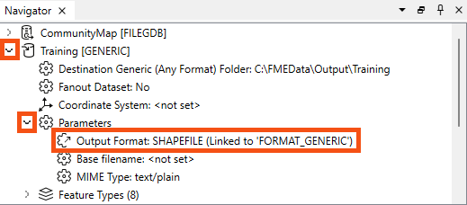
He double-clicks the Output Format parameter and sees it’s currently assigned to “Esri Shapefile.”
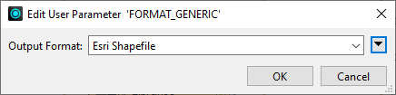
Frank sees that the output format is linked to a user parameter in the Navigator window because it has a different icon and says “(Linked to ‘FORMAT_GENERIC’).” Most parameters in a workspace – reader, writer, and transformer – can be linked to published parameters to let users set their value when they run the workspace.
Frank wants to see how the parameter works, so he clicks the Run menu, ensures Prompt for User Parameters is checked, and then clicks Run.
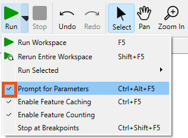
The Translation Parameter Values dialog asks Frank to select a value for Output Format, defaulting to “Esri Shapefile.” Frank clicks the drop-down menu for Output Format and sees he can pick any format supported by FME. That's too many options.
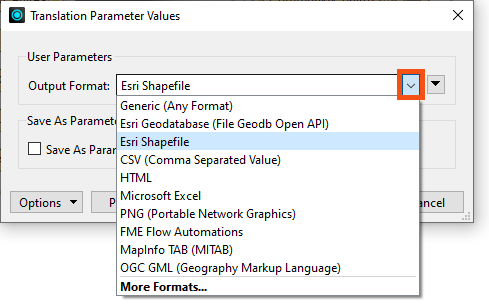
To fix this problem, Frank closes the dialog and looks at the User Parameters section of the Navigator. He finds the “[FORMAT_GENERIC]” published parameter. He will replace this to restrict the user’s options. He right-clicks it and selects Delete.
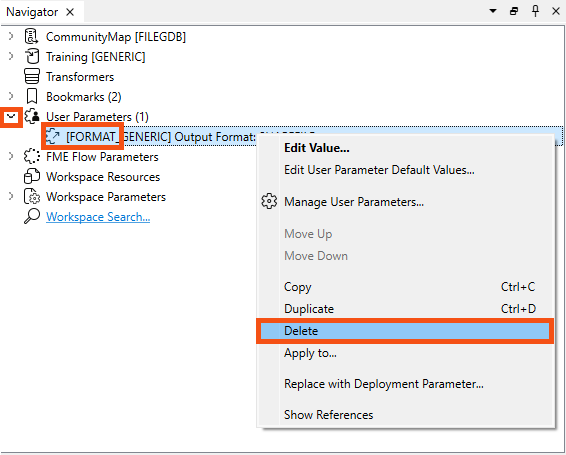
Then he right-clicks User Parameters and clicks Manage User Parameters...
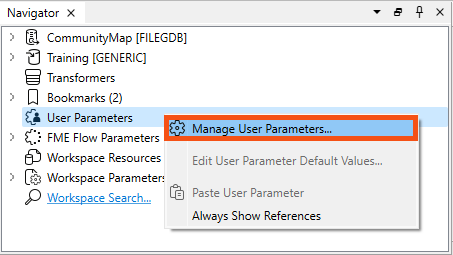
Frank is deleting the existing user parameter and adding a new one because some user parameters that are created automatically cannot be edited fully. For those, it’s better to start fresh.
The Parameter Manager dialog opens. Frank clicks the Insert button (the green plus) to add a user parameter. There are many types of user parameters available. In this case, Frank chooses Choice, which lets him provide a list of options to the user that map onto a different value provided to the workspace. This user parameter is useful for letting users choose formats or coordinate systems because it hides the more complex name FME needs and instead shows a simple version to the user.
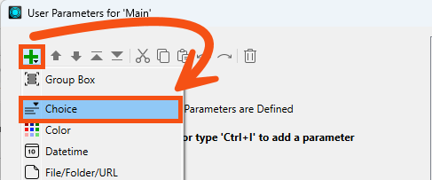
On the right-hand side, Frank fills out the dialog with the following parameter properties:
| Parameter Identifier |
OutputFormat |
| Prompt |
Enter an output format |
| Published |
Enabled |
| Required |
Disabled |
| Disable Attribute Assignment |
Enabled |
| Choice Configuration |
Dropdown |
His dialog now looks like this:
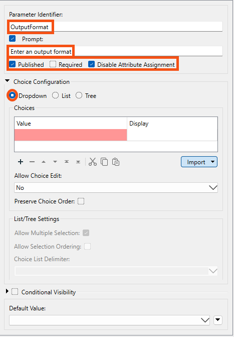
To fill in the Choices table, rather than manually filling in the cells in the Value and Display columns, Frank wants to import the file formats the user can choose from. He clicks Import > Writer Formats.
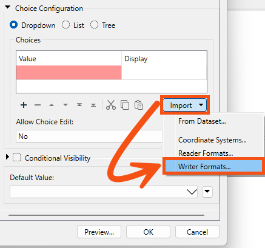
In the Select Writer Formats dialog, use the Search bar to search for the following six formats. Click the check to add them to the list.
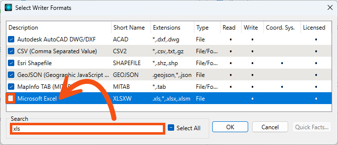
Click OK.
The selected formats appear in the Choices table:
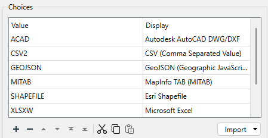
Frank uses a table here to show the user a more readable name for the format (Display = Description) instead of the value that FME needs to choose (Value = Short Name).
Finally, Frank selects Esri Shapefile as the default value.
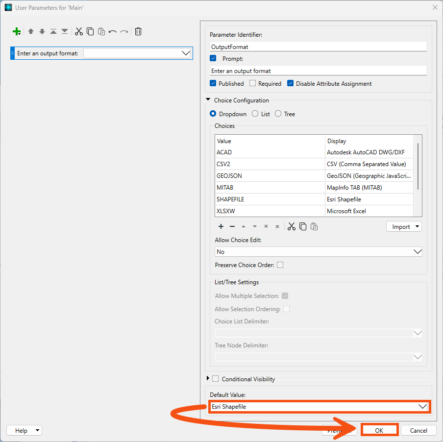
He clicks OK to create the published parameter.
Now that he has created a published parameter, he needs to link it to the correct writer parameter for it to work. He returns to the writer’s Output Format parameter, right-clicks it, and clicks Link to User Parameter.
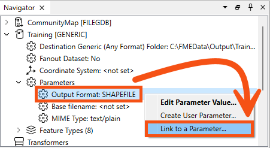
In the Set to User Parameter dialog, he picks OutputFormat from the list and clicks OK.
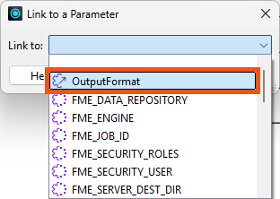
When he clicks Run, he is prompted to choose an output format from the restricted list. The workspace runs, and he receives the data in his chosen format.
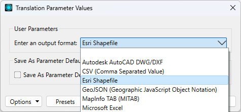
Exercise
Frank is happy with the format selection, but now he’d like to let users pick the layers from the geodatabase they receive. He knows he can control this with the user parameter Feature Types to Read, found in the Navigator under CommunityMap [FILEGDB] reader > Parameters > Features to Read.
For the exercise, create a new published parameter that lets the user pick which feature types to read and write. Hint: in some cases, creating a published parameter is as easy as right-clicking the parameter you want to link and selecting Create User Parameter.
Leave Us Feedback on This Lesson